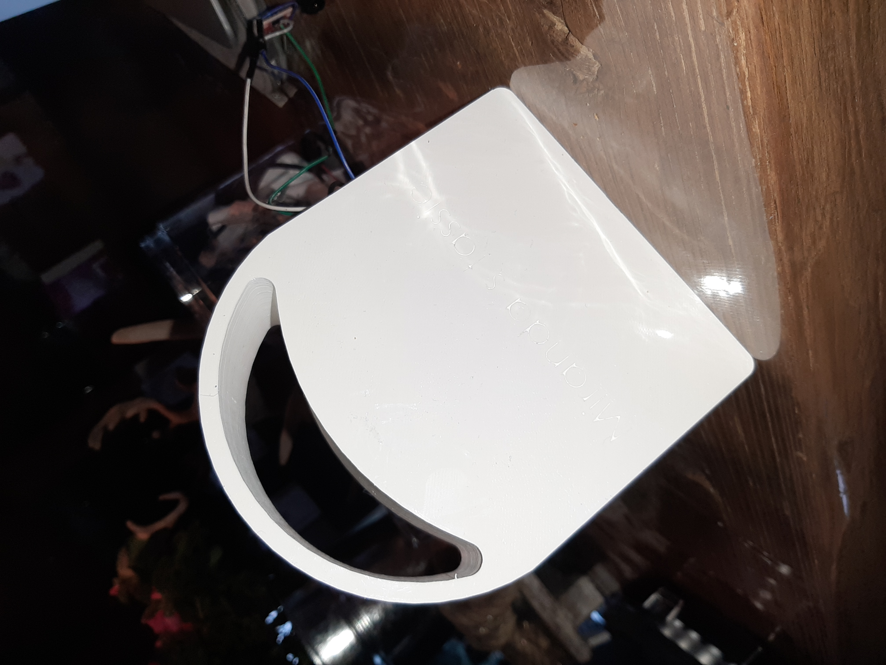
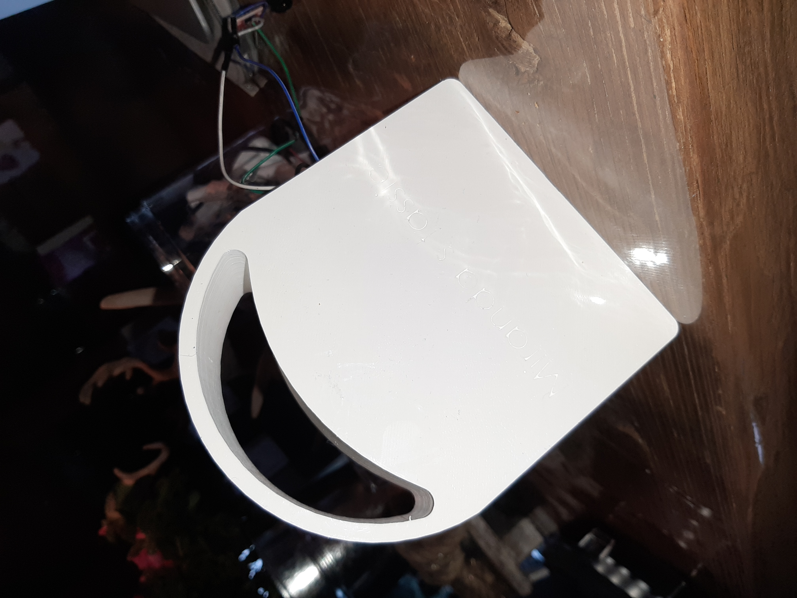

Smart Technology
Tijdens de Technology lessen hebben we ons bezig gehouden met het programmeren, ontwerpen en ontwikkelen van een IoT oplossing waarbij planten worden bewaterd, door een apparaat, wanneer de plant hierom vraagt. Het programmeren, ontwerpen en ontwikkelen was iets wat ik nog niet eerder heb gedaan, ik heb dan ook vele nieuwe programma's moeten leren kennen.
Daarom is het extra leuk om te zien dat het doorlopen van de stappen goed ging, op wat kleine foutjes na.
De bijbehorende bestanden zijn door middel van deze link te bekijken.
De eerste weken hebben we de basis beginselen geleerd betreft programmeren met gebruik van Arduino en een ESP32. Deze ESP was verbonden aan het internet en dus verbonden met Arduino. Doormiddel van draadjes hebben we op het bord de verbindingen gelegd met verschillende onderdelen: moisturizer, pompje, weerstand etc. Hierbij werd het gauw het belang duidelijk dat je de juiste onderdelen met het juiste punt op de ESP verbond, rekening houdend met negatief en positief. Een foutje hier in heeft er dan ook voor gezorgd dat een ESP van mij is gecrasht, dit zal ik dus niet meer vergeten. Tijdens het plaatsen van de draadjes, en de verdere stappen, heb ik veel hulp gehad van Jan, dus dat was fijn. Aangezien bij het maken van een klein foutje, je gehele apparaat het niet meer doet.
I
Vervolgens hebben we met het gebruik van Eagle en een tutorial een eigen PCB ontworpen, of te wel het bord waar de ESP32 op geplaatst wordt. Hierbij zijn verschillende connecties al in het bord gemaakt. Zodat enkel de fysieke onderdelen nog met het bord verbonden hoeven worden. Hiervoor moest allereerst een schematische tekening gemaakt worden waar alle onderdelen met elkaar verbonden worden. Vervolgens kan met de board modus het uiteindelijke uiterlijk en de routes van de verbindingen bepaald worden.
Het is me gelukt een PCB te ontwerpen, uiteindelijk kreeg ik als feedback dat ik de Ground vergeten ben een naam te geven, dit is voor mij aangepast en heb ik mijn eigen PCB's ontvangen.
I I I
Als volgende stap kwam het ontwerpen van het bakje met SolidWorks. Het duurde even voordat ik SolidWorks door had, opnieuw met hulp van Jan. Als vorm van het bakje hebben we gekozen voor een tasje. Hierbij rekening houdend met de licht en temperatuursensor die een gat nodig hadden. Net zoals de vochtigheidsmeter en pomp die zich uiteindelijk buiten het bakje moeten bevinden. De stap hierna was het 3D printen. Tijdens de workshop hebben we uitleg gekregen over hoe de 3D printer werkt en dat we rekening moesten houden met verschillende diktes om het beste resultaat te behalen. Dit is allemaal goed gegaan, echter heb ik daar geen rekening mee gehouden bij de grote van de letters die ik op het bakje heb geplaatst. Het 3D printen heeft een volle 24 uur genomen, het printen deden we samen met een ander team.

I
Als laatste stap hebben we de ESP en overige onderdelen vast gesoldeerd aan de PCB, om de connecties te leggen, en vast gemonteerd in het tasje. Sommige onderdelen moeten nog gemonteerd worden met het gebruik van schroefjes. Overige onderdelen zijn vastgemonteerd door middel van secondenlijm. Alle onderdelen pasten in het bakje. Tijdens het seminar zal het tasje worden getest op de plant... zal die doen wat die moet doen? I I I I
De bijbehorende bestanden zijn door middel van deze link te bekijken.
PROGRAMMEREN MET ARDUINO
De eerste weken hebben we de basis beginselen geleerd betreft programmeren met gebruik van Arduino en een ESP32. Deze ESP was verbonden aan het internet en dus verbonden met Arduino. Doormiddel van draadjes hebben we op het bord de verbindingen gelegd met verschillende onderdelen: moisturizer, pompje, weerstand etc. Hierbij werd het gauw het belang duidelijk dat je de juiste onderdelen met het juiste punt op de ESP verbond, rekening houdend met negatief en positief. Een foutje hier in heeft er dan ook voor gezorgd dat een ESP van mij is gecrasht, dit zal ik dus niet meer vergeten. Tijdens het plaatsen van de draadjes, en de verdere stappen, heb ik veel hulp gehad van Jan, dus dat was fijn. Aangezien bij het maken van een klein foutje, je gehele apparaat het niet meer doet.
ONTWERPEN PCB MET EAGLE
Vervolgens hebben we met het gebruik van Eagle en een tutorial een eigen PCB ontworpen, of te wel het bord waar de ESP32 op geplaatst wordt. Hierbij zijn verschillende connecties al in het bord gemaakt. Zodat enkel de fysieke onderdelen nog met het bord verbonden hoeven worden. Hiervoor moest allereerst een schematische tekening gemaakt worden waar alle onderdelen met elkaar verbonden worden. Vervolgens kan met de board modus het uiteindelijke uiterlijk en de routes van de verbindingen bepaald worden.
Het is me gelukt een PCB te ontwerpen, uiteindelijk kreeg ik als feedback dat ik de Ground vergeten ben een naam te geven, dit is voor mij aangepast en heb ik mijn eigen PCB's ontvangen.
ONTWERPEN BAKJE MET SOLIDWORKS & 3D PRINTEN
Als volgende stap kwam het ontwerpen van het bakje met SolidWorks. Het duurde even voordat ik SolidWorks door had, opnieuw met hulp van Jan. Als vorm van het bakje hebben we gekozen voor een tasje. Hierbij rekening houdend met de licht en temperatuursensor die een gat nodig hadden. Net zoals de vochtigheidsmeter en pomp die zich uiteindelijk buiten het bakje moeten bevinden. De stap hierna was het 3D printen. Tijdens de workshop hebben we uitleg gekregen over hoe de 3D printer werkt en dat we rekening moesten houden met verschillende diktes om het beste resultaat te behalen. Dit is allemaal goed gegaan, echter heb ik daar geen rekening mee gehouden bij de grote van de letters die ik op het bakje heb geplaatst. Het 3D printen heeft een volle 24 uur genomen, het printen deden we samen met een ander team.
SOLDEREN EN MONTEREN
Als laatste stap hebben we de ESP en overige onderdelen vast gesoldeerd aan de PCB, om de connecties te leggen, en vast gemonteerd in het tasje. Sommige onderdelen moeten nog gemonteerd worden met het gebruik van schroefjes. Overige onderdelen zijn vastgemonteerd door middel van secondenlijm. Alle onderdelen pasten in het bakje. Tijdens het seminar zal het tasje worden getest op de plant... zal die doen wat die moet doen? 